Definition
- Plastic packaging in the beauty industry is often made of:
** PET - polyethylene terephthalate, chemical name for polyester; very common and the most recycled ** HDPE - high-density polyethylene ** PP - polypropylene plastic
- “r” prepended to any type of plastic means it’s recycled
** For example, rPET is recycled PET
- Recycled plastics issues in the beauty industry
** Not all plastic packaging is currently recyclable ** Sometimes plastic packaging is blended or plastic recyclers do not sort or handle all types of plastics. If something can’t be recycled, then it may end up in the landfill. ** Improvement: Some companies have set goals to make sure more of their packaging is recyclable. This means their packaging design will change (for better!) because using recycled plastics may have color or form limitations.
- “PCR” is short for “post consumer recycled” or “post consumer resin”, which is recycled waste
- Customers don't know what to recycle or how to recycle
** Since some packaging can be recycled but others can’t and not every community accepts the same types of plastics, it’s confusing for the customer. ** This leads to people not recycling at all, or people recycling everything but recyclables being sorted into landfills anyway. ** Improvement: Some companies partner with organizations to teach customers how to correctly recycle their packaging, or to ensure their company’s packaging gets recycled. Ideally, if it’s recycled through a partner, they’ll be able to use the recycled resin back in their manufacturing. *** How2Recycle **** How2Recycle is labeled on a partnered company’s packaging to help consumers quickly understand whether it can be recycled and how to recycle it. *** TerraCycle **** TerraCycle is a recycling service where consumers can send their emptied products for recycling. They purchase a box for a specific category of goods to be recycled (the beauty box is $200). Some partnered brands, like Garnier and Burt’s Bees, allow consumers to ship those empty containers to TerraCycle for free.
- There aren’t any policies around recycled plastics packaging in the beauty industry (or, I didn’t find them!)
** If the demand for recycled plastics increases, recyclers, manufacturers, and innovators may be able to handle more types of plastics and process more of it...so industries that usually use raw plastics can use recycled plastic instead. *****
Supply Chain Overview
Recent & Relevant News
Legal Issues & Major Controversies
Mapping the Supply Chain
Supplier Engagement Model
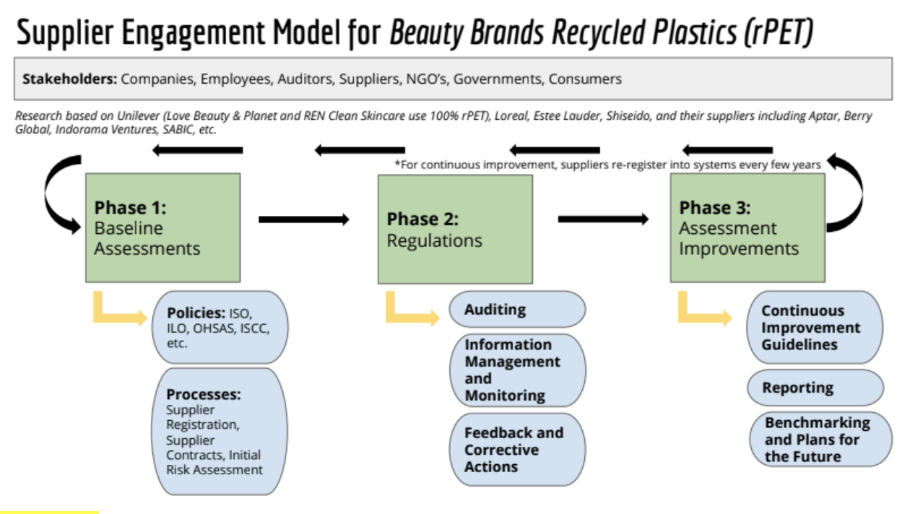
Governance
Benchmarks
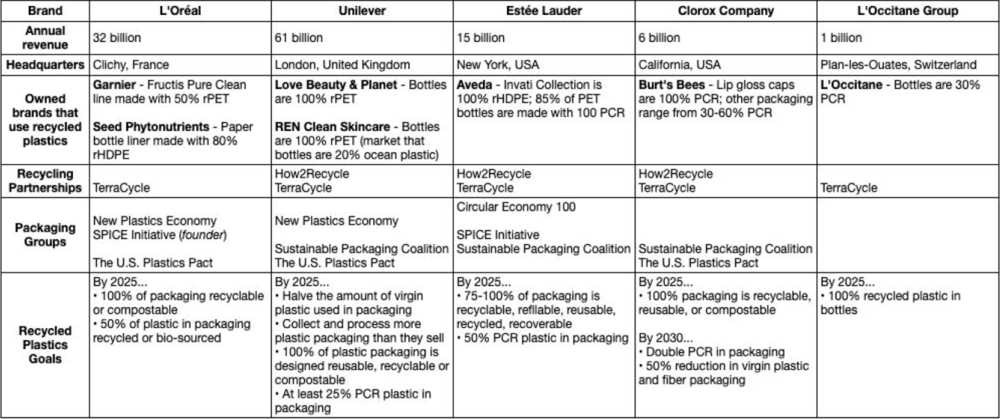
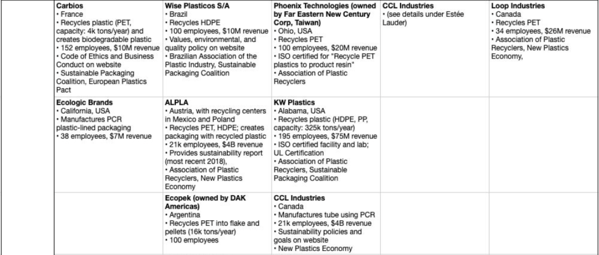
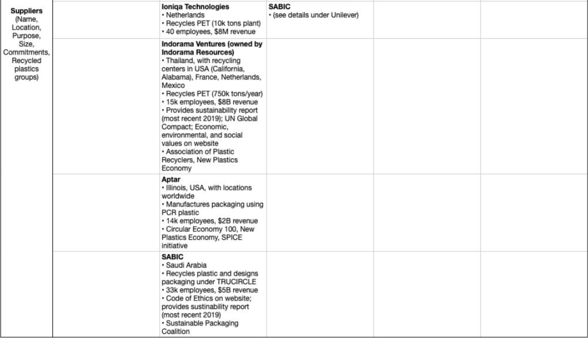
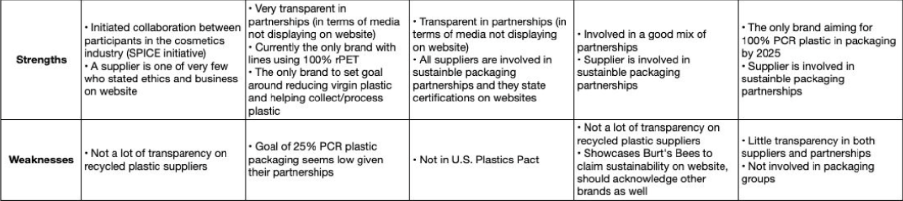
Monitoring
Verification
Reporting
Life Cycle Assessments
LIFECYCLE ASSESSMENT BENEFITS
- Energy inventory of the lifecycle of rPET vs. PET beauty bottles
** Provide the LCA community and other interested parties with average LCI data for rPETvs. PET resin ** To provide stakeholders with information about the relative environmental impacts ofrPET and PET to then be used as a benchmark for evaluating future updated rPET resinresults and compare with virgin plastics ** Thus, since there are limited LCAs available for beauty product usage – we will use other rPET resin comparisons as benchmarks. ** It can also pinpoint areas (e.g., material components or processes) where changes wouldbe most beneficial in terms of reducing energy use or potential impacts.
DEFINITION AND PURPOSE OF THE LCA
- A Life Cycle Assessment of Analysis (LCA) is a tool commonly used to evaluate the environmental performance of a product throughout all life cycle stages and through the inputs and outputs of the potential environmental impacts into a LCA software. The data set used for this analysis is called a Life Cycle Inventory (LCI). The Life Cycle Impact Assessment (LCIA) helps with interpretation of the emissions inventory.
- The Life Cycle Assessment of rPET beauty bottles provides a framework for measuring the environmental impact of this product.
** It is a factual analysis of the product’s entire life cycle in terms of sustainability from cradle to grave. ** The purpose of thisLCA is to compare virgin PET resin to that of recycled post-consumer PET resin to provide stakeholders context in choosing a less impactful material for the packaging of their products.
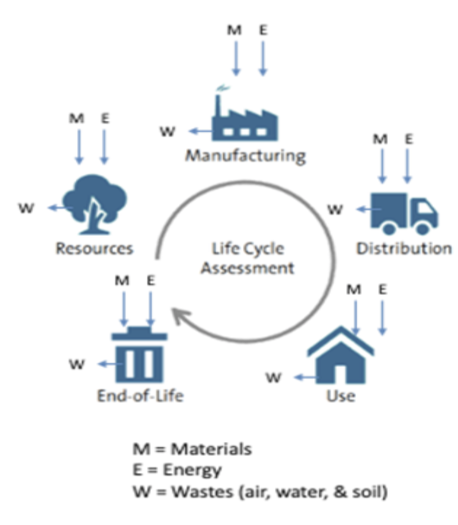
FUNCTIONAL UNIT
- The function unit for this LCA is resin for the use of a variety of products including beauty and beverages. As the study boundary concludes at material manufacture, a mass functional unit has been chosen.
- Results for this analysis are shown on a basis of both a 1,000 pounds and a 1 kg metric unit of plastic resin. This functional unit then covers both rPET and virgin PET for comparison purposes (1 kg of PET and RPET) .
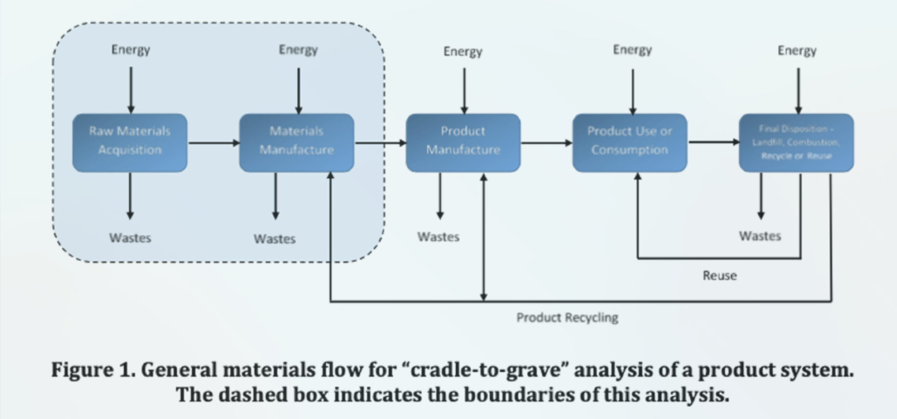
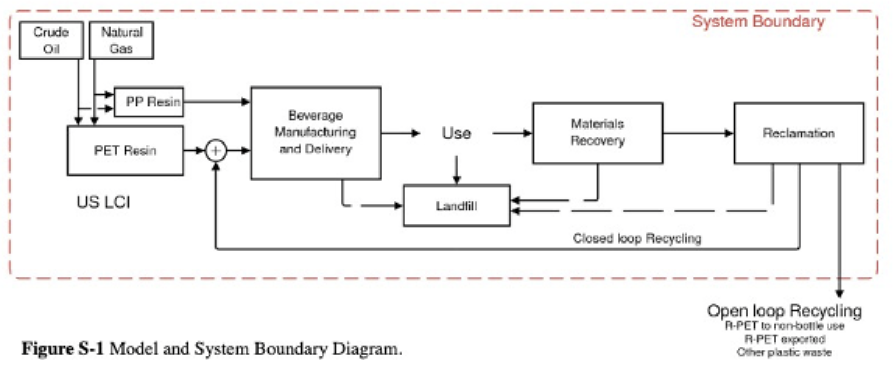
SYSTEM BOUNDARIES
- For this LCA, the bottle of rPET is the system boundary, not including the beauty product inside the bottle or its overall packaging
- The system boundaries stop at resin production so that the resin data can be linked with fabrication, use and end-of-life data to create full life cycle inventories for a variety of PET and rPET products such as automotive parts or beauty packaging. Example system provided below
- The geographic scope of the analysis is the manufacture of rPET resin in North America & Europe. However, the majority of the data used in the modeling is from Northern American databases
STANDARDS FOR LCAs
International Standards Organization (ISO)
- The leading standards for LCA are:
** ISO14040: Principles and Framework ** ISO14044: Requirements and Guidelines ** Others: *** ISO14041: Scoping and Life Cycle Inventory *** ISO14042: Life Cycle Impact Assessment *** ISO14043: Life Cycle Assessment Interpretation
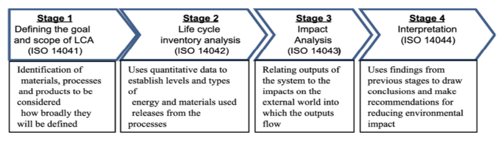
IMPACT CATEGORIES
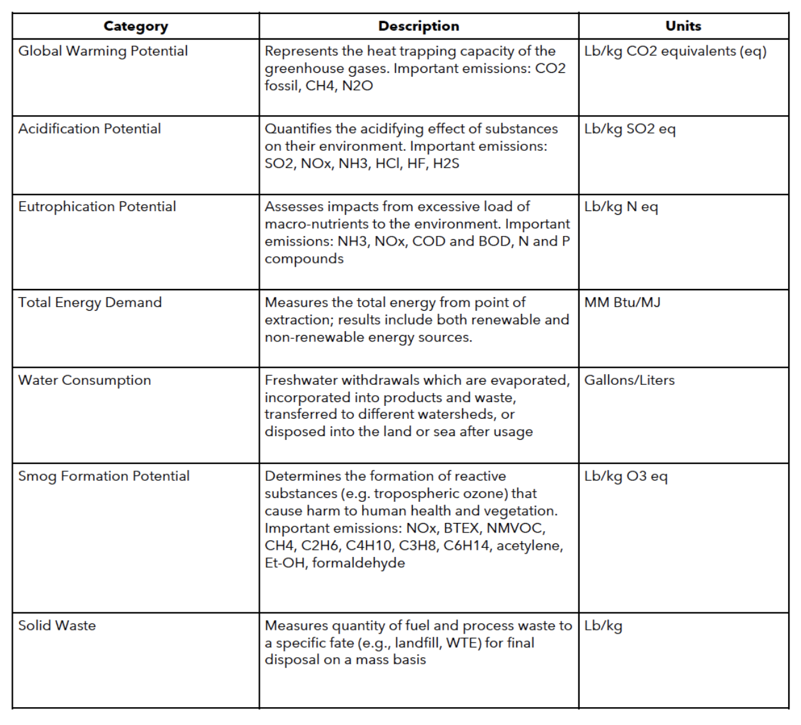
CALCULATING IMPACTS FOR rPET
- The commercially available SimaPro LCA software is used to model the systems
- Use of SimaPro can produce a table that is called the Life Cycle Inventory Result (LCI). The table can contain hundreds of ‘elementary flows’ that represent emissions or extractions to and from the environment. In order to understand what these mean, ISO prescribes a step known as classification. The elementary flows from the inventory are assigned to the impact categories according to the substances ’ability to contribute to different environmental problems
LIFE CYCLE PHASES OF rPET
- Recovery: Collection of postconsumer plastic
- Sorting and Separation: Sorting of plastics from other co-collected recovered materials (such as paper, steel, and aluminum), and separating mixed plastics into individual resins
- Reclaimer Operations: Additional separation and processing of post consumer resin by a reclaimer to convert the received material into clean resin ready for use in manufacturing.
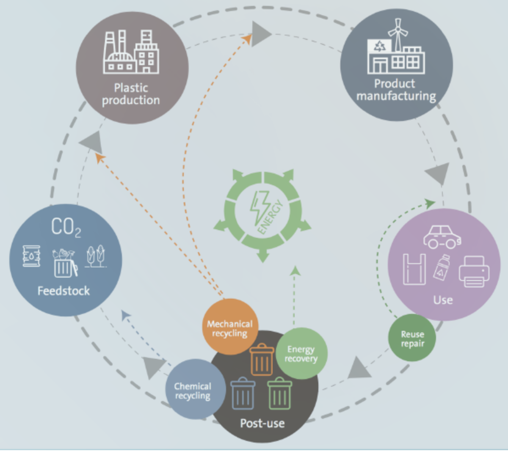
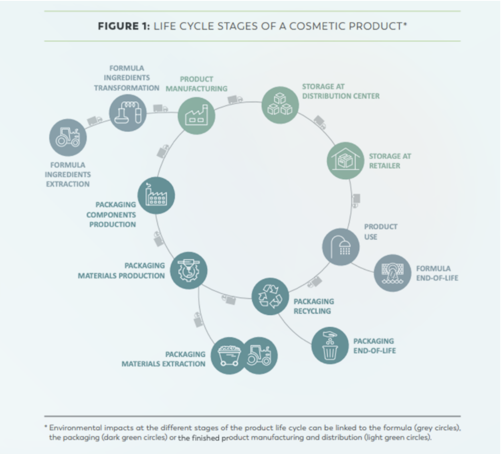
ASPECTS OF THE PET AND rPET STUDIES
- Product Phases
** Beginning with raw material extraction and continuing through disposition at the end of its useful life
- Consumer Markets
** North America ** Europe
- Producer markets
** North America ** Europe
- Data Sources
** The Association of Recycled Plastics (APR) ** Franklin Associates, A Division of Eastern Research Group (ERG) ** US LCI Database ** EcoInvent ** Plastics Europe ** PE International
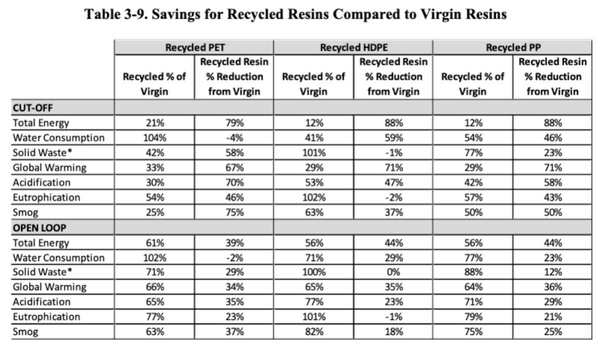
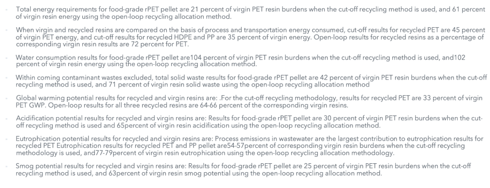
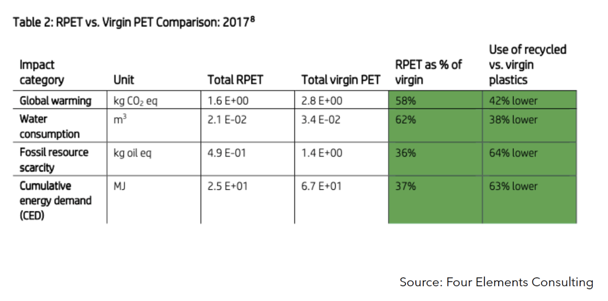
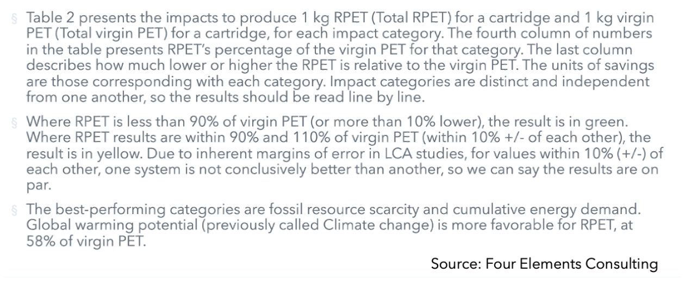
CONCLUSIONS - PET vs rPET FOR USE IN BEAUTY PACKAGING
- APR’s LCI for PCR Resins
** Analysis of Table 3-9 shows that recycled resins have lower environmentalimpacts than corresponding virgin resins across the range of results categoriesanalyzed, with few exceptions.
- Four Elements Consulting Life Cycle Assessment comparison of virgin PET vs. recycledPET in HP Ink cartridges
** Based on the data and assumptions set out in this report, the replacement of virginPET for RPET in ** HP cartridges shows a clear advantage from an environmental life cycle standpoint.In almost all categories evaluated, RPET performs better than or on par with virginPET.
- Overall Conclusions:
** Lack of LCAs available to the public in the beauty packaging space (moreavailable in beverage and technology space) ** For the use of beauty bottles, aggregating rPET data concludes that rPET bottles haveoverall less environmental impact than virgin PET and should be used moreregularly in the packaging of beauty products.
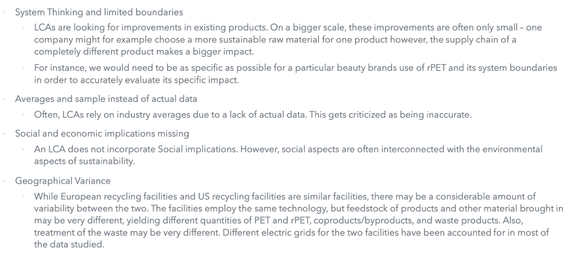
- https://plasticsrecycling.org/images/apr/2018-APR-Recycled-Resin-Report.pdf
- https://pre-sustainability.com/articles/life-cycle-assessment-lca-basics/
- https://ecochain.com/knowledge/life-cycle-assessment-lca-guide/
- https://resource-recycling.com/plastics/2020/11/11/pet-industry-group-updates-resin-life-cycle-analysis/
- https://napcor.com/sustainability/
- https://napcor.com/sustainability/life-cycle-analysis/
- https://simapro.com/
Other Challenges & Impacts
Innovations
Improvement: There are a handful of organizations coming together to set and hold each other accountable to goals, and to innovate on new processes and packaging.
- Circular Economy 100
** Bringing companies together to collaborate on creating circular economy opportunities.
- New Plastics Economy
** Bringing stakeholders together to “eliminate, innovate, and circulate” plastics packaging.
- SPICE Initiative (Sustainable Packaging Initiative for Cosmetics)
** Cosmetics brands, organizations, and suppliers working together to create methodologies for more sustainable cosmetics packaging. Their challenges and opportunities are: “recycled materials, renewable sourced plastics, finished and decorating processes, tertiary pack and distribution, multiple use packaging takeback programs, recyclability”.
- Sustainable Packaging Coalition
** Group that brings companies together to make packaging more sustainable. Their goals are: “source responsibly, optimized for efficiency, effectively recovered, non-toxic, low impact”.
- The U.S. Plastics Pact
** By 2025, participants in the pact aim to: *** Use 100% reusable, recyclable, or compostable packing *** Recycle or compost 50% of packaging *** Use at least 30% recycled or bio-based packaging
Conclusions
- Continue to collaborate with organizations and manufacturers, but also get involved with public policies to improve the pipeline and recovery of recyclables.
** Partnering with TerraCycle is helpful but can be expensive and not “user friendly”. The customer needs to pay $200 to responsibly recycle their beauty packaging, or save up enough empty containers of a single brand before they can mail it to TerraCycle for free. Both options are cumbersome for a regular person.
- It seems deceiving to claim you’re sustainable by spotlighting one brand that is using recycled plastics. Try to make improvements within the other brands as well.
- It might be helpful to share strategies with competitors who aren’t a part of recycled plastics groups. This way there will be more demand for recycled plastics, improving the pipeline.
Sources and References
- Woldemar d’Ambrières, « Plastics recycling worldwide: current overview and desirable
- changes », Field Actions Science Reports [Online], Special Issue 19 | 2019. URL :
- http://journals.openedition.org/factsreports/5102
- https://www.alpla.com/en/capabilities/recycling
- https://www.alpla.com/en/company/facts-figures
- https://www.aptar.com/sustainability/sustainable-product-solutions/
- https://www.aveda.eu/living-aveda/responsible-packaging
- https://b2brazil.com/hotsite/wiseplasticossa
- https://www.burtsbees.com/content/articles-asset-1/articles-asset-1.html
- https://www.businesswire.com/news/home/20180419006579/en/REN-Clean-Skincare-to-Debut-100-Recycled-Bottle-Containing-Reclaimed-Ocean-Plastic*#:~:text=From%20late%20summer%202018%2C%20the,the%20banks%20of%20those%20waterways.
- https://carbios.fr/en/profile/
- https://carbios.fr/en/leaders-of-sustainable-packaging-coalition-welcome-french-company-carbios-as-new-member/
- https://ccllabel.com/portfolios/tubes-earthtube-pcr/
- https://www.cosmeticsdesign.com/Article/2019/06/27/L-Oreal-invests-in-biotech-plastics-recycling-initiative
- https://craft.co/search
- http://digitaledition.plasticsmachinerymagazine.com/publication/frame.php?i=512784&p=18&pn=&ver=html5
- https://ecologicbrands.com/about/
- http://www.ecopek.com.ar/en/
- https://www.elcompanies.com/en/news-and-media/newsroom/company-features/2019/elc-announces-its-2020-2025-environmental-social-and-governance-goals
- https://www.ellenmacarthurfoundation.org/news/the-ellen-macarthur-foundations-circular-economy-100-programme-launches-its-usa-network
- https://www.garnier.co.id/about-garnier/beauty-responsibly/garnier-sustainability/terracycle
- https://group.loccitane.com/group/news/loccitane-and-loop-industries-sign-multi-yearsupply-agreement-transition-100
- https://www.happi.com/contents/view_breaking-news/2017-10-02/aveda-achieves-sustainable-packaging-milestone/
- https://how2recycle.info/guide
- https://www.kwplastics.com/resins-we-sell/
- https://www.loopindustries.com/en/infinite_loop
- https://www.loreal.com/en/articles/plastic-packaging-policy/
- https://www.newplasticseconomy.org/about/the-initiative
- https://open-spice.com/about-spice/what-is-spice/
- https://www.packagingdigest.com/personal-care-packaging/lorals-paper-bottle-easy-earth-tough-showers
- https://packagingeurope.com/terracycle-ren-collaboration/
- https://www.packworld.com/design/materials-containers/article/13338473/natural-toothpaste-moves-to-recycled-tube
- https://www.phoenixtechnologies.net/why-rpet.aspx
- http://www.plasticsrecycling.com/2020-exhibitors
- https://plasticsrecycling.org/markets/buyers-and-sellers/polyethylene-and-polypropylene-market-information
- https://plasticsrecycling.org/markets/buyers-and-sellers/pet-market-information
- https://www.recyclingtoday.com/article/love-beauty-planet-recycled-pet-use/
- https://www.recyclingtoday.com/article/taiwan-far-eastern-new-century-acquires-phoenix-pet-recycler/
- https://resource-recycling.com/plastics/2020/09/02/virgin-plastic-company-signs-deals-with-merlin/
- https://www.sabic.com/en/sustainability/circular-economy/trucircle-portfolio-and-services
- https://www.spglobal.com/marketintelligence/en/news-insights/blog/ifrs-9-impairmenthow-it-impacts-your-corporation-and-how-we-can-help
- https://storymaps.arcgis.com/stories/3ff70a53cadd43cd97513793aae5ee86
- https://sustainability.indoramaventures.com/en/home
- https://sustainablepackaging.org/about-us/
- https://www.terracycle.com/en-US/about-terracycle
- https://www.thecloroxcompany.com/who-we-are/ignite-strategy/about-ignite-esg/
- https://www.unilever.com/sustainable-living/reducing-environmental-impact/waste-and-packaging/rethinking-plastic-packaging/
- https://usplasticspact.org/launch-august2020/
- https://www.waste360.com/plastics/loccitane-loop-industries-agree-transition-100-sustainable-pet-plastic
- http://www.wise.eco.br/resinastermoplasticas.php
- https://www.zoominfo.com